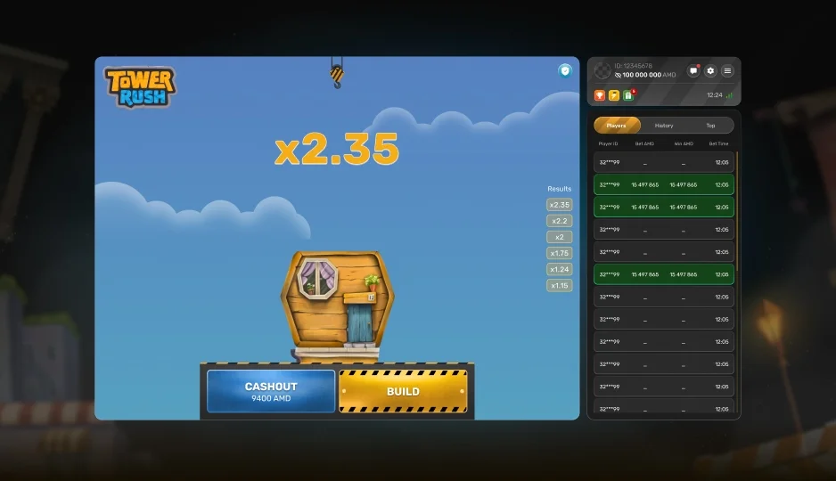

Is Tower Rush worth playing?
Tower Rush offers fast, simple crash gameplay with a single decision: when to cash out. Whether it is worth playing depends on your taste for high-variance games. Treat it as paid entertainment, not a way to make money.
Tower Rush
An honest look at Galaxsys's Tower Rush: what it is, the real RTP, how it plays, and whether it's worth your time and money.
18+ only · Real-money gambling
This Tower Rush review covers how the Galaxsys crash game actually plays, what its RTP means, and its strengths and weaknesses, so you can decide whether it fits your taste before staking real money. Our view: fast, simple fun, but high variance and not a way to make money.
Tower Rush is a fast, one-decision instant crash game from Galaxsys. Its strengths are simple, quick rounds, a clear cash-out mechanic, a listed RTP of around 97%, and a free demo to practise. Its limits are the same as any instant win game: a house edge, high variance, and no way to influence the outcome. If you want a quick game you can dip in and out of and treat as entertainment, it is worth a try. If you are looking for a way to make money, it is not one. We do not publish a star rating, because we have no disclosed scoring methodology to support one.
Tower Rush is an instant crash game by Galaxsys with a tower-building theme. You place a stake, then a tower builds block by block while the multiplier rises. There are no reels or paylines; it is one decision: cash out before the tower crashes. Cash out in time and your stake is multiplied by the multiplier at that moment; leave it too late and the round is lost.

Tower Rush strips crash gameplay to one decision: when to cash out as the tower builds and the multiplier rises. Rounds are quick, the interface is clean, and the tension comes from waiting for a higher multiplier while risking a crash. If you like fast, high-variance games with an easy learning curve, it delivers; if you prefer slower or skill-based play, it may feel repetitive.
Operator listings indicate an RTP of around 97%, which is competitive for the crash category, though we mark this for confirmation with Galaxsys. It plays as a high-volatility title: a crash can end any round instantly, so results swing sharply. Outcomes are driven by a certified random number generator, meaning no pattern or predictor applies.
You don't have to take our word for it. You can play the free demo with no deposit or download, and see how the cash-out timing feels for yourself.
Yes, the genuine Galaxsys game is legitimate and runs on a certified RNG. The scams are clone sites and 'predictor' apps using the name. For the full check and how to spot fakes, see whether Tower Rush is safe.
Compare licensed operators that carry Tower Rush, with bonuses and payout speeds, on our where to play Tower Rush guide. Confirm the game and your payment method are available in your region before depositing. 18+.
Tower Rush suits players who enjoy quick crash games and want a low-complexity title they can dip in and out of. It is a poor fit for anyone seeking guaranteed returns or a strategy that beats the house, because none exists. For the full Tower Rush game overview, start with the free demo, then play at a licensed casino with limits set.
Tower Rush offers fast, simple crash gameplay with a single decision: when to cash out. Whether it is worth playing depends on your taste for high-variance games. Treat it as paid entertainment, not a way to make money.
On the plus side it is quick, easy to learn, and has a clear cash-out mechanic with a listed RTP around 97%. On the downside it is high variance, outcomes are random, and losses can add up fast if you chase them.
The core loop is like other crash titles: a rising multiplier you must beat by cashing out. Tower Rush's difference is its tower-building theme and Galaxsys presentation rather than a fundamentally new mechanic.
Operator listings indicate an RTP of around 97%. It behaves as a high-volatility game because a single crash can end the round at any time.
The genuine Galaxsys game played at a licensed operator is a legitimate product, but it is real-money gambling. Play only at licensed sites, set limits, and avoid unofficial clones or APK files.
18+ only. Tower Rush is a real-money gambling game where you can lose money. Gambling is not a way to make income and outcomes are random. If gambling stops being fun, take a break or seek help: BeGambleAware.org, GamCare (0808 8020 133), or 1-800-GAMBLER (US). Set deposit and time limits before you play.
Affiliate disclosure: some links to operators on this page may be affiliate links. If you sign up through them we may earn a commission at no extra cost to you. This never affects our factual assessment of an operator or of Tower Rush.